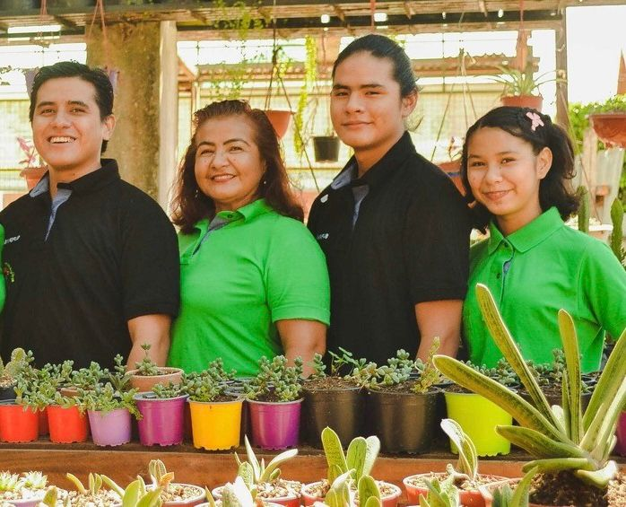

Our Projects
Building a living network of gardens where ancestral knowledge and science grow together.
Pilot Partnership: Orígenes
Pucallpa, Peru

Summary
Raíces Vivas is initiating its first collaboration with Orígenes, a local initiative in Pucallpa dedicated to preserving traditional Amazonian practices and biodiversity. This pilot partnership will serve as a model for future collaborations between communities, researchers, and institutions.
Objectives
- Co-create sustainable infrastructure (living lab, seed house, shared community space).
- Preserve and propagate medicinal and endangered Amazonian plants.
- Protect and document traditional plant knowledge through ethical collaboration.
- Design a replicable partnership model that ensures mutual benefit and respect.
Vision
This pilot will demonstrate how ethical reciprocity—exchanging access to space for infrastructure and training—can create thriving ecosystems for both biodiversity and knowledge.
Together, we can help preserve Amazonian biodiversity and knowledge
We are developing our pilot in Pucallpa and exploring future sites. If your community, garden, or organization shares our values, we’d love to connect and collaborate
Future Projects
Raíces Vivas envisions a network of interconnected gardens throughout the Amazon. Each garden will act as a node for conservation, research, and cultural revitalization — co-designed with local communities and guided by ancestral wisdom.
Potential next steps include:
Mapping existing gardens
Conduct a comprehensive survey of Amazonian botanical gardens and nurseries that align with regenerative principles, identifying potential partners and learning from existing practices.
Developing frameworks
Develop clear guidelines and legal/ethical frameworks that ensure communities retain ownership of their plant knowledge, and that research collaborations are equitable, transparent, and mutually beneficia
Building a digital archive
Build a secure, accessible online platform documenting medicinal plants, cultivation methods, and sustainable land management techniques — preserving knowledge for communities, researchers, and future gardens.
Get Involved
Whether you’re a researcher, a donor, or a dreamer — you can help this vision grow.
Partner
Collaborate as a researcher, institution, or garden.
Donate
Support infrastructure, training, and biodiversity preservation.
Volunteer
Join us on-site or remotely to help with communication, research, or design.